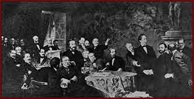

Members included: Mór Jellinek (1823–1883), economist, president of the Corn Exchange; Baron Frigyes Harkányi (1826–1919), ministerial counselor, member of the Upper House of the Parliament; Miklós Gottesmann, Károly Ullmann, Izidor Szitányi.
|  | |||
|
Oil painting by Gyula Benczúr (1844–1920) Members included: Mór Jellinek (1823–1883), economist, president of the Corn Exchange; Baron Frigyes Harkányi (1826–1919), ministerial counselor, member of the Upper House of the Parliament; Miklós Gottesmann, Károly Ullmann, Izidor Szitányi. |
|||